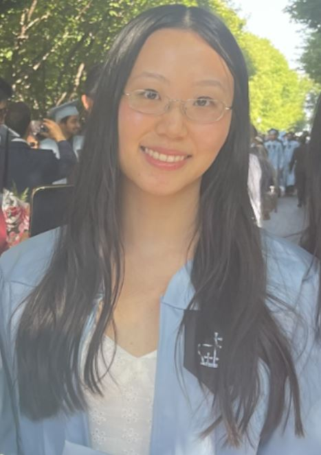

Cara Chen

Bio
I am a recent graduate interested in software development, working on personal projects in my free time.
Currently working on a web application.
Please feel free to contact me via
LinkedIn
or email.
Education
- Bachelor of Science, Applied Mathematics - Columbia University (2021-2023)
- Bachelor of Arts, Computer Science, minor in Mathematics, magna cum laude - CUNY Queens College (2017-2021)
Skills
- JavaScript, Node.js
- React
- CSS
- HTML5
- Java
- C++
- Python
Awards and Certifications
- Dean's List - Columbia University, Sp 2022
- Dean's List - CUNY Queens College, six semesters
- Student Ambassador/Tour Guide - CUNY Queens College
- Provost Scholar - CUNY Queens College